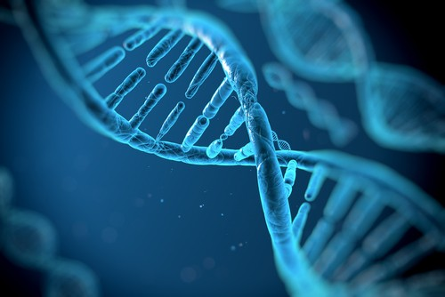
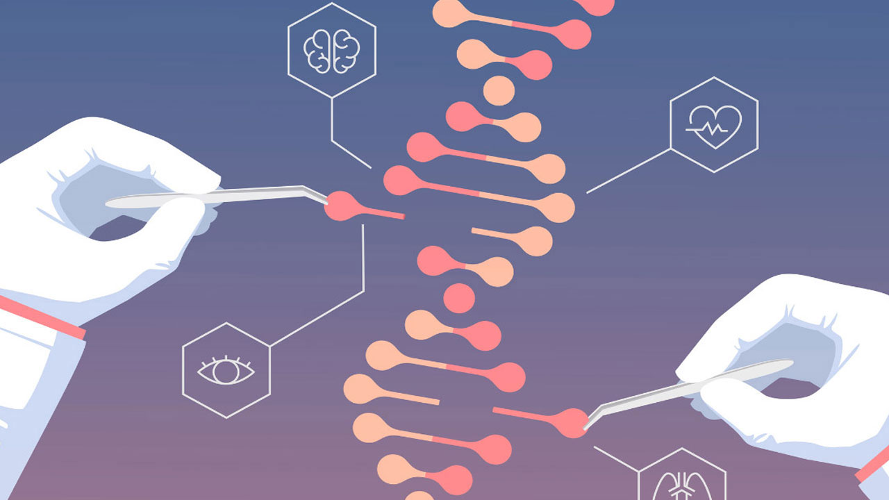

O Que É A Genética?
A genética é uma área da biologia que estuda a hereditariedade e a variação nos organismos vivos. Ela estuda como as informações genéticas são transmitidas de geração em geração, como elas são expressas nos organismos e como as mutações genéticas podem afetar a função dos genes e dos organismos. A hereditariedade é a transmissão de informações genéticas de uma geração para outra. Os genes são as unidades básicas da hereditariedade e estão localizados nos cromossomos. Cada gene é composto de uma sequência específica de DNA que contém as instruções para produzir uma proteína ou uma molécula de RNA. As proteínas e os RNAs são as moléculas responsáveis por muitas das funções celulares, incluindo a produção de enzimas, a regulação da expressão gênica e a síntese de outras moléculas importantes para a célula. A estrutura do DNA foi descoberta por James Watson e Francis Crick em 1953. O DNA é uma molécula dupla hélice composta de quatro nucleotídeos diferentes: adenina, guanina, citosina e timina. A ordem desses nucleotídeos na sequência de DNA determina a informação genética codificada pelos genes.
A expressão gênica é o processo pelo qual a informação genética é utilizada para produzir proteínas ou moléculas de RNA funcionais. A expressão gênica é regulada por diversos mecanismos, incluindo a regulação da transcrição, a estabilidade do RNA e a regulação da tradução. Esses mecanismos permitem que as células produzam proteínas e RNAs nas quantidades e nos momentos adequados para o funcionamento correto da célula. As mutações genéticas são mudanças na sequência de DNA que podem afetar a função dos genes. As mutações podem ser causadas por erros na replicação do DNA, por exposição a agentes mutagênicos, como radiação ou produtos químicos, ou por outros fatores genéticos. Algumas mutações podem ser benéficas, como aquelas que permitem a adaptação dos organismos a ambientes diferentes, enquanto outras podem ser prejudiciais, como aquelas que causam doenças genéticas.
Figura 1. Genética (InfoEscola, 2023)
A engenharia genética é uma área que utiliza técnicas de manipulação genética para modificar o DNA dos organismos. Essas técnicas podem ser utilizadas para criar plantas e animais geneticamente modificados com características específicas, como resistência a pragas ou doenças, maior produtividade agrícola ou até mesmo para fins terapêuticos, como a produção de medicamentos por meio de bactérias geneticamente modificadas. A genética também tem um papel importante na medicina, permitindo a identificação de mutações genéticas que podem causar doenças genéticas e o desenvolvimento de testes genéticos para diagnóstico e prevenção dessas doenças. A terapia gênica é outra área promissora da medicina que utiliza técnicas de manipulação genética para tratar doenças genéticas, inserindo genes funcionais em células doentes. Em resumo, a genética é uma área fascinante e em constante evolução, com aplicações em diversas áreas da biologia, da medicina e da indústria. O conhecimento sobre a hereditariedade, a expressão gênica e a manipulação genética é fundamental para o entendimento dos processos biológicos e para o desenvolvimento de novas tecnologias e terapias.
Figura 2. Doenças (BoaConsulta, 2019)
Referências bibliográficas: